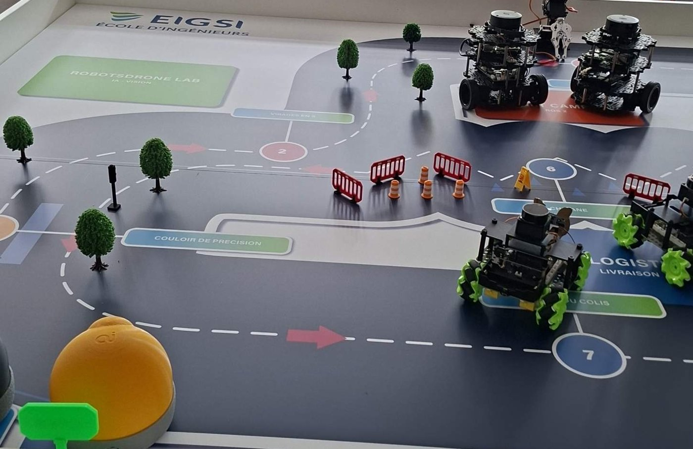
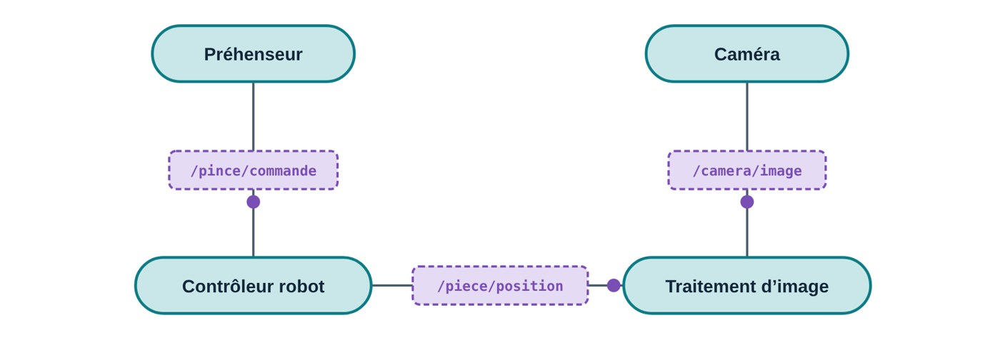
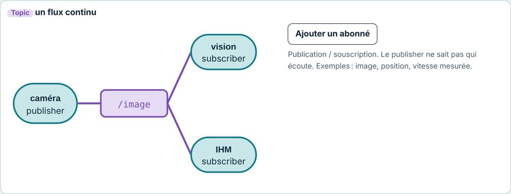
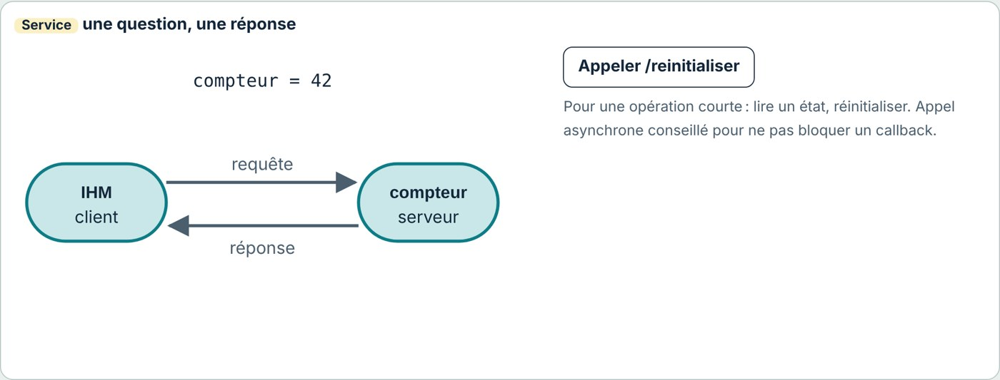
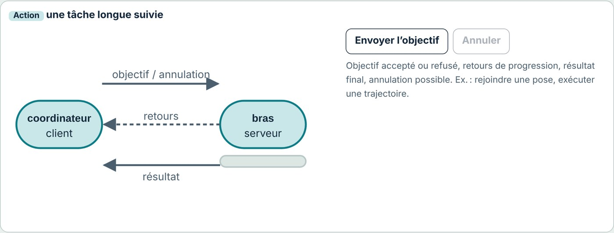
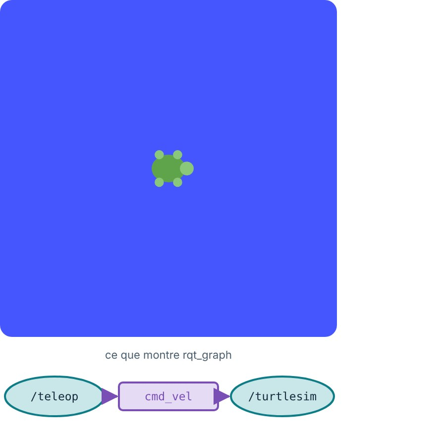
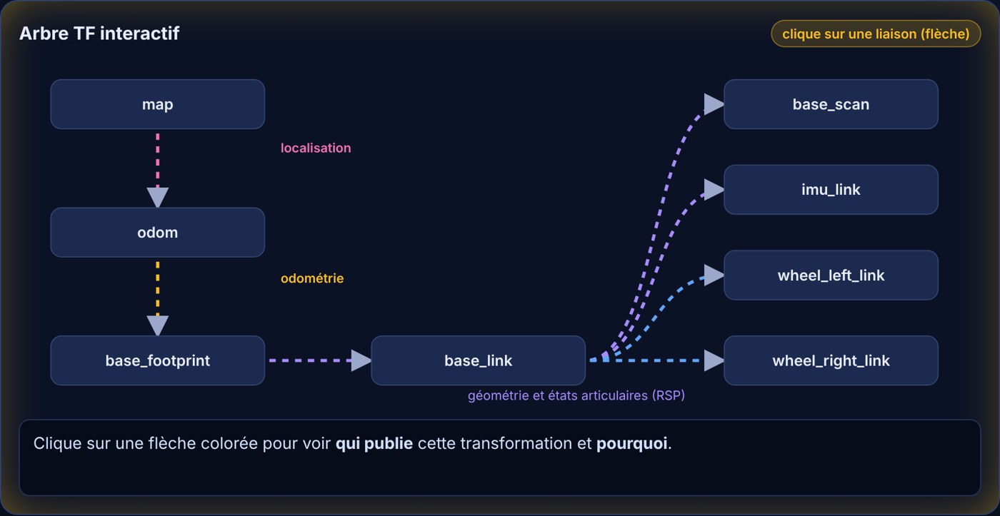
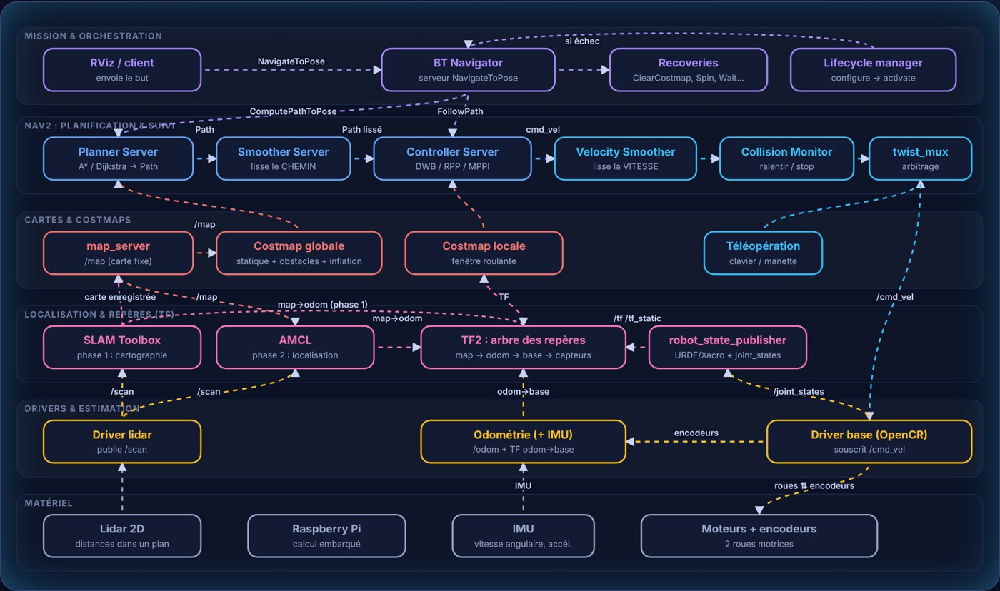

01Contexte
Formation donnée à l'EIGSI par l'IRT Jules Verne : les bases de ROS 2, puis la navigation autonome avec Nav2, avec un fil rouge industriel (une cellule robotisée de tri et un robot de livraison). J'ai réalisé tous les TP sur mon PC, sous Windows, avec un environnement Pixi.

02ROS 2 et architecture modulaire
Un système robotique se découpe en nœuds, un par responsabilité, qui échangent des messages sur des topics. Exemple : une cellule pick and place.

Trois façons d'échanger, à choisir selon le besoin :
- Topic : un flux continu, sans réponse (image, position, vitesse).
- Service : une question, une réponse (lire un état, réinitialiser).
- Action : une tâche longue, suivie et annulable (rejoindre une pose).



03TP 1 : la tortue livreuse
Premiers nœuds Python avec rclpy sur turtlesim : piloter la tortue en publiant des vitesses sur cmd_vel, puis enchaîner des livraisons. rqt_graph montre qui parle à qui.

04TP 2 : navigation autonome avec Nav2
Missions de livraison avec un TurtleBot3 Burger simulé (ROS 2 Humble). Le robot doit aller d'un point à un autre, éviter les obstacles, ou signaler un échec qu'on sait expliquer.
- Repères et transformations (TF) : carte, odométrie, base, capteurs.
- Localisation AMCL, cartographie SLAM Toolbox, costmaps.
- Planner, controller et behavior trees ; diagnostic d'une panne couche par couche.


05Le lien avec mes autres projets
Les schémas de cette page viennent de fiches de révision interactives que j'ai réalisées pour la formation.